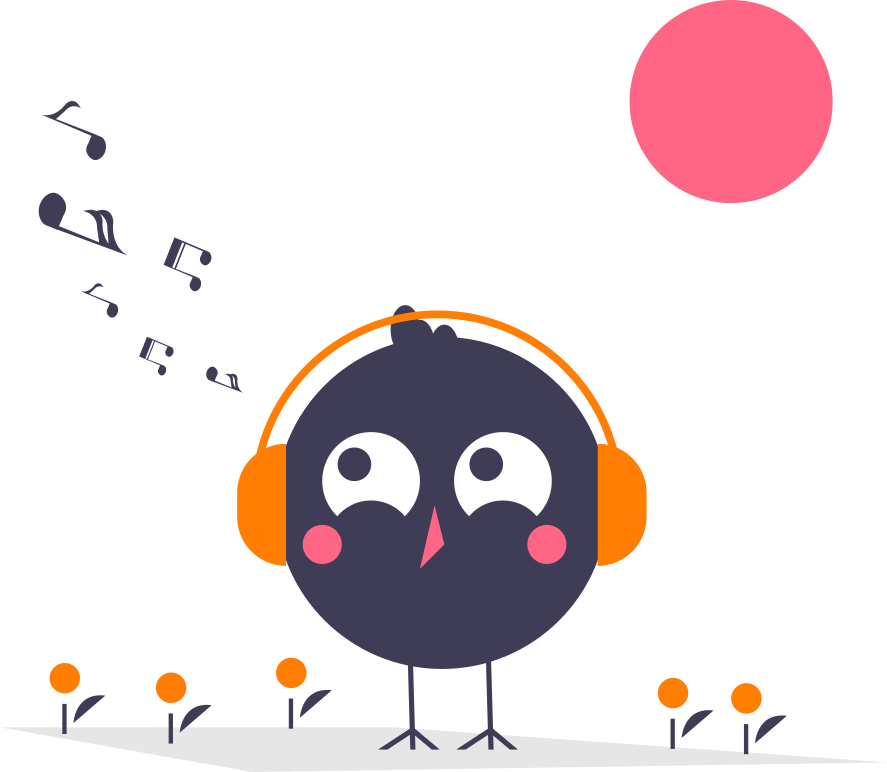

Conecte corretamente o seu uToy ao computador e clique em Tentar Novamente.

Seu código subiu!!
Agora você pode ver ele funcionando em sua placa!.
{{atividade.title}}
{{atividade.extense_title}}.
{{atividade.title}}
{{atividade.extense_title}}
{{atividade.description}}
Agora você precisa escolher as portas onde seus componentes estarão
Sobre o DuinoBlocks4Kids
(Versão: Beta 4.0.0)
O DuinoBlocks4Kids (DB4k) é um projeto do LIvRE -
Laboratório de Inovações em Robótica Educacional (www.nce.ufrj.br/ginape/livre)
do GINAPE - Grupo de Informática Aplica à Educação (www.nce.ufrj.br/ginape)
responsável pela área de Informática, Educação e Sociedade do PPGI - Programa de
Pós-Graduação em Informática da UFRJ
(www.ppgi.ufrj.br) em parceria com a
RNP – Rede Nacional de Pesquisa
(http://www.rnp.br/).
O DB4K é um ambiente de programação em blocos para placas
de prototipagem eletrônica Arduino. Trata-se de um software livre ainda em fase de
desenvolvimento e que tem como objetivo o apoio ao ensino de conceitos básicos de programação para crianças do
Ensino Fundamental I.
O DB4K foi desenvolvido por Rubens Lacerda Queiroz
como parte de sua Dissertação de Mestrado em Informática (PPGI/UFRJ/2017): DuinoBlocks4Kids: utilizando
Tecnologia Livre e materiais de baixo custo
para o exercício do Pensamento Computacional no Ensino Fundamental I por meio do aprendizado de
programação aliado à Robótica Educacional.
Esta é a versão “cliente-side” do
DB4K, que permite o envio dos programas nele desenvolvidos diretamente para placas
Arduino
conectadasao Computador.
O DuinoBlocks4Kids possui também uma versão WEB
integrada ao LabVad (Laboratório Virtual de Atividades Didáticas
em Ciências e Robótica), que possibilita a realização de experimentos remotos com uma placa de prototipagem
eletrônica Arduino (http://labvad.nce.ufrj.br)